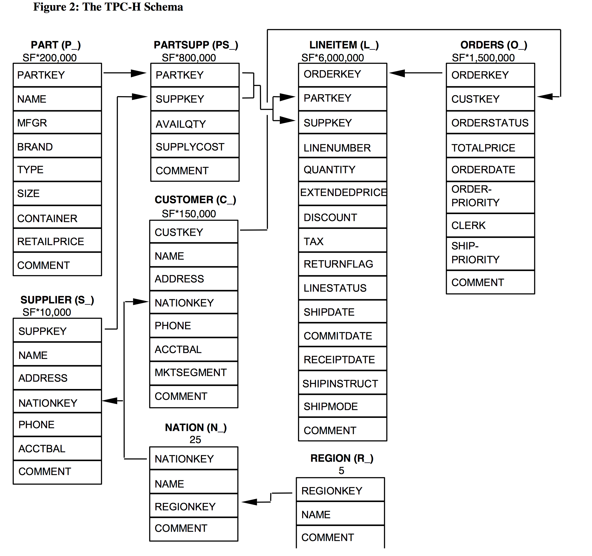
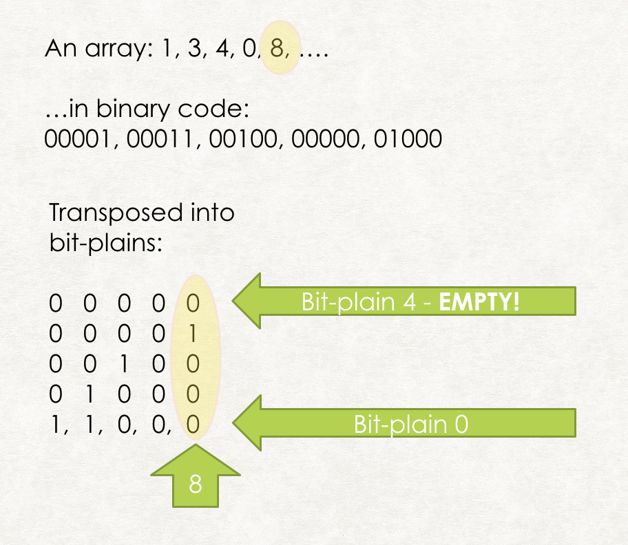
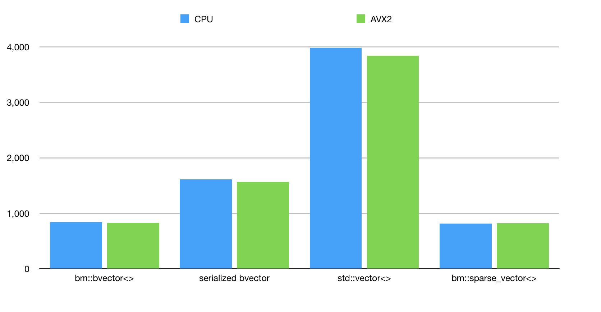
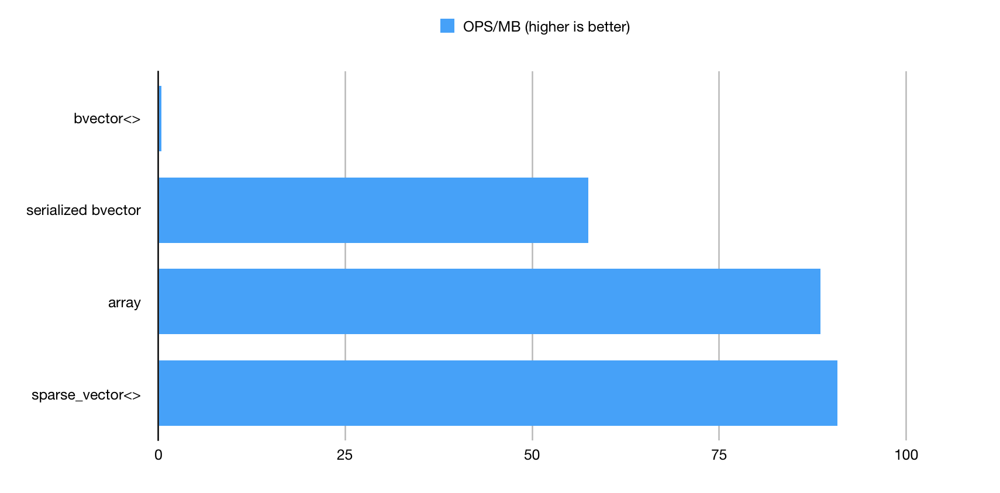

Case study: optimization of set-algebraic arrays for ER JOIN operations
Anatoliy Kuznetsov. Nov, 2017. anatoliy_kuznetsov@yahoo.com
Introduction
This article analyzes the performance and memory characteristics of BitMagic library leveraging very sparse vectors while performing set algebra operations used for join acceleration. The goal of this case study is to analyze memory footprint of various types of set representations based on data generated to mimic analytical requests to join relational tables with one-to-many relationship and answer question of applicability of bit-vectors for RDBMS join acceleration.
Bit vectors provide functionality making it a compelling for use in set algebraic applications. Some applications deal with large in-memory datasets face problem of excessive memory consumption which may lead to disk centric I/O loaded designs. Excessive memory consumption can be reduced via in-memory compression techniques. Alternative design decision allow to build faster systems. Here we analyze alternative design decisions and trade offs between memory consumption and speed. BitMagic library provides algorithms and containers optimal for different data patterns.
Problem description
In this example we analyze the sub-case used in TPC-H transaction benchmark (http:// www.tpc.org/tpc_documents_current_versions/pdf/tpc-h_v2.17.2.pdf), join between LINEITEM and ORDERS tables.
Star scheme used for TPC-H benchmarking
The scheme above was taken from the TPC-H benchmark specification. The focus of this case study is relational join between tables with high cardinality, ORDERs to LINEITEM. ORDER table in the TPC-H database naturally represents orders, placed in the trading system, LINEITEMs - show us items in the orders. One order can contain multiple items (one-to-many) relationship.
This is high cardinality case, where each order actually refers to a relatively small number of items, LINEITEM.ORDERKEY column contains values that are very uncommon or unique (one item per order).
Why is high cardinality case important?
This case is very important because this is a common scenario, where conventional bit vectors may be inefficient as a tool for in-memory indexing. Conventional bit vectors are excellent for low cardinality indexes, where relatively low variance of values are present in one indexed column. Sparse or compressed bit vectors and inverted lists work fine for medium cardinality cases. High cardinality cases present a problem, bit vectors become very sparse and noticeably inefficient.
Test case: scale and statistical properties of an index
In this test simulation we generate an index with the following statistical properties:
- use 1 million elements to simulate ORDERs to ITEMs index.
- assume that ITEMs ids can go up as high as 2 million, (this parameter does not look very important)
- one order contains 5 items
- items are not always shipped sequentially, in other words, assignment of the item ids is fairly random
LINEITEM key generation
Line item keys, 5 for each vector are generated using pseudo random algorithm where a certain part (like 20% cases) is assigned sequentially from a random location within [0..2M] range. This simulates cases, where all items are shipped immediately, because they are in stock (assumption).
Another 20% are assigned almost sequentially one after another with some random increment of [0..10] within the same [0..2M] range of possible ids. This distribution simulates “almost ready items” (or some technical variance in the id assignment generator).
Everything else is assigned randomly, assuming that the items are shipped from different locations and/or at different times.
This pattern is very challenging and unfavorable for bit vector indexing scheme. This should negatively impact performance and result in memory issues, which we want to understand better.
Competing implementations
case 1: a collection of bit vectors
Variant 1 uses an STL map<> of bit vectors using BitMagic library (bm::bvector<> container). Each bm::bvector<> is constructed to possibly use less memory, with bm::BM_GAP on the fly compression mode, custom gap lengths table { 8, 32, 128, 512 } and maximum size of 2M to explicitly declare the allowed dynamic range and limit some internal structures.
Memory consumption is calculated for each bvector<> instance. Memory consumption of STL map<> is not taken into account.
case 2: a collection of serialized bit vectors
BitMagic library offers bit vector serialization, which saves sparse bit vector into continuous
memory BLOB, using various compaction tricks. This mode cannot be used to access random
bits in the vector, but BitMagic offers streaming logical operations on serialized BLOBs. So
serialized BLOBs are perfectly suitable for query acceleration. Implementation details here are
that we would use an STL vector for BLOB memory manager. It is possible to
do it in C-style, or create a custom serialized implementation, but let’s use a std::vector<> for
the clarity of this case study.
case 3: a collection of arrays of integers
This is a a classic uncompressed inverted list, all generated values are stored as a
std::vector, the properties of high cardinality and random distribution makes this
scheme a suitable candidate for storing this relationship. BitMagic library again offers a full set
of logical streaming operations for array representation.
case 4: bit-transposed sparse vectors with access index
This variant is a bit more involved technically, but the latest versions of BitMagic library provide the container and tools to help.
What is bit transposition?
Bit transposition is an equivalent transformation of our source integer array into bit vector plains, where each plane represents corresponding bit in each element of the input array.
Figure 3. Bit Transposition of an inverted list
Noteworthy implementation detail:
- we initially jump from case 3 (array representation)
- the array is recalculated using delta-coding, very simple transformation actually to keep only delta values between
consecutive sorted array elements. Embarassingly simple formula coming:
a[i] = a[i] − a[i − 1]. This transformation is designed to reduce bitness/dynamic range of array elements. - arrays are stored in memory using BitMagic bm::sparse_vector<> container, which provides transparent bit transposed storage. Size and offsets are stored separately. To make bit patterns more regular we actually sort collection of vectors by some ad-hoc measure of entropy to bring vectors with low delta values first, it somewhat improves the compression in the bit-plains.
Memory consumption
After running our benchmark program we get memory consumption numbers.
bm::bvector<> memory footprint = 2189711888 (2088MB)
bm::bvector<> BLOB memory footprint = 29773037 (28MB)
std::vector memory footprint = 47359288 (45MB)
bm::sparse_vector<> memory footprint = 9673776 (9MB)
Figure 4. Memory consumption comparison.
Memory consumption numbers are very indicative. bm::bvector<> consumes 2GBs of memory due to various overheads related to random access,
and block based allocation. This maybe too much for the sparse-random case and storing millions of objects in memory.
BitMagic serialized case shows excellent memory footprint of just 28MB.
Plain uncompressed storage of ids in std::vector<> - 45MB. Good result as well.
bm::sparse_vector<> with all transposition compression and sorting tricks applied gives us 9M and it is a champ in memory consumption,
being 5 times better than std::vector<>. While this method claims a tentative victory here we must admit that it may actually use the fact of a
limited dynamic range that order items generated for this case. Our diagnostics shows that the
sparse vector used 20 bits to store this dynamic range, plus a few plains were compressed
using properties of bm::bvector<>. This may not hold true for all cases and all databases.
The fact to take home here is that when using BitMagic Library as a library of bit vectors we do not have to always use bm::bvector<> container. Having a hammer is good, but not all problems are nails. Good understanding of database cardinality helps to choose the correct strategy.
Performance benchmark description
For all variants of storage we created benchmarks to perform simulated requests used for INNER JOIN operations. Our simulation boils down to joining all vectors together (logical OR), then picking 250 vectors randomly, OR-ing all of them (simulated BETWEEN or other range query), then perform AND between set 1 and set 2. The result vector is traversed to extract first 200 elements (TPC-H benchmark wants 100).
This is not full TPC-H analytical transaction mix, but it illustrates one of the complex aspects of the (pre-calculated) join fairly well.
Our test program repeats benchmark algorithm 1000 times and calculates number of transactions per second (higher is better).
All implementations are done using BitMagic streaming set algorithms.
The test is NOT multi-threaded, by design it uses one CPU core.
System description
System description
INTEL(R) CORE(TM) I5-6500 CPU @ 3.20GHZ 14nm, 6MB Cache, TDP 65W, max turbo frequency 3.6GHZ
The Core i5-6500 is an intermediate model of the Intel sixth-generation (Skylake) Core i5 family.
We ran this test on a few other systems but this mid-range CPU looks representative for
benchmarking.
Compiler settings (GCC): -march=core2 -O2 -g0
g++ --version
Configured with: --prefix=/Applications/Xcode.app/Contents/Developer/usr --with-gxx-includedir=/usr/include/c++/4.2.1
Apple LLVM version 9.0.0 (clang-900.0.38)
Target: x86_64-apple-darwin16.7.0
Thread model: posix
Performance benchmark results
1. bm::bvector<> index; 837 ops/sec
2. serialized bvector; 1610 ops/sec
3. std::vector ; 3984 ops/sec
4. bm::sparse_vector ; 817 ops/sec
Figure 5. Benchmark run 1.
The results here may come out as a little bit of surprise, because the plain bvector<> variant is
actually not the fastest one. Bear in mind though that the extreme memory consumption
requires lots of bandwidth and cache flushes, making this indexing method not just a memory
hog, but a bandwidth hog as well. Operations on serialized bvector<> use streamlined memory
model and perform better as a result. std::vector<> storage model uses combination of
bm::combine_or() algorithm and bm::bvector<> operations and shows the best performance.
bm::sparse_vector<> is the slowest, but quite on par with the benchmark1. The performance
here would be subject of fluctuations, but in our benchmark it seems to be using high CPU L3
cache locality and working better than expected despite the high level of data compression.
CPU SIMD vectorization: AVX2
Figure 6. JOIN operation using AVX2 SIMD.
For AVX2 tests we used -march=native -mavx2 settings. Our AVX2 optimizations have little performance impact. BitMagic 3.9.1+ version uses SIMD instructions to do logical operations on blocks of bits and to calculate the population count. Based on the chosen scenario the bulk of the algorithms uses variants of compressed super sparse blocks and boils down to sorting and comparing various int arrays.
More work to be done to fully utilize the AVX2 potential.
Normalized results (join operations per second per MB)
Figure 7. JOIN operations per MB of memory consumtion.
Conclusions
-
Real life search and RDBMS systems should use statistical properties of sets/vectors to
segregate storage between bit-vectors, arrays and compressed storages.
-
Embarrassingly sparse vectors can and should use compressed in-memory storage
techniques, the compression in many cases actually improves performance.
-
BitMagic Library provides algorithms and tools to work efficiently with various array
implementations, including C-style arrays, STL. It is important to experiment with the
runtime compression options of bvector<> container.
-
Many systems may not need random access vectors, and should store serialized and
compressed BLOBs and use streaming model of oprtations. This is an important design
decision. Counterintuitively, streaming compressed mode may offer better performance
comparing to fully uncompressed random access.
Source Code
http://bitmagic.io/doxygen/html/xsample01_8cpp-example.html
OR
https://github.com/tlk00/BitMagic/blob/master/samples/xsample01/xsample01.cpp
Acknowledgements
The author thanks Michael Kholodov (NCBI) and Andrey Yazhuk (Elsevier) for ideas, reviews and discussions.